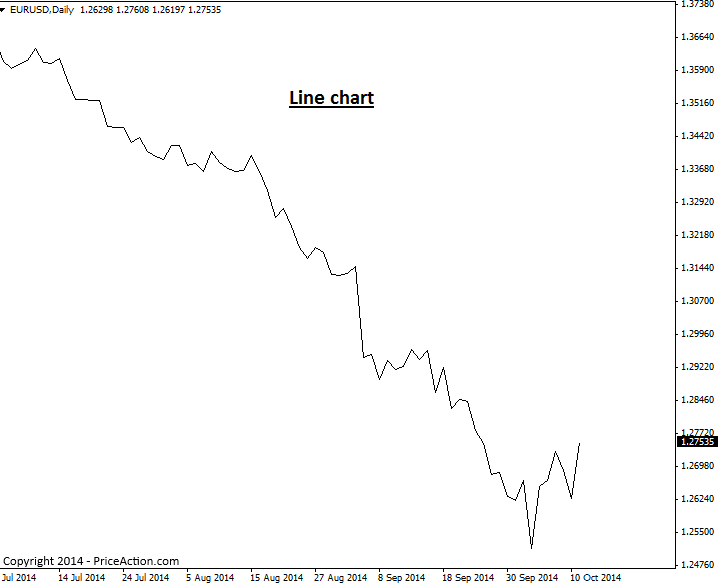
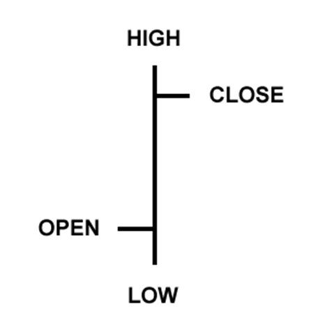
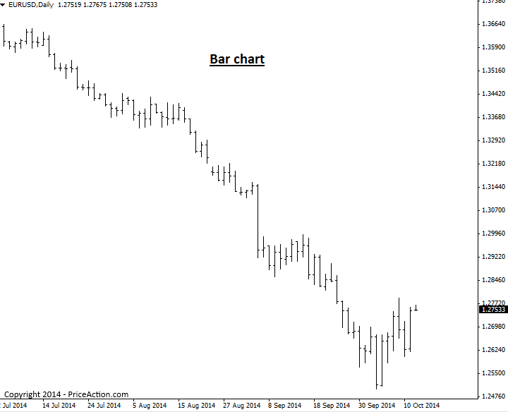
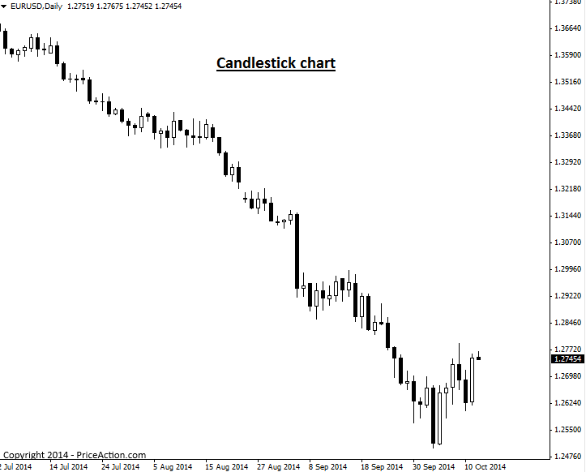

Introduction to Price Charts
가격 차트 소개
가격 차트는 특정 기간 동안 특정 시장의 가격을 표시합니다. 모든 차트 플랫폼에서 다양한 시간대를 선택할 수 있습니다. 차트 시간대는 1분 차트부터 월별 및 연간 차트까지 다양합니다.
차트에는 선 차트, 막대 차트, 캔들 차트의 세 가지 주요 유형이 있습니다. 가격 움직임 거래에서는 캔들 차트가 가장 '최적'인 차트로 가장 널리 인정받고 있습니다.
하지만 각 차트 유형에 대해 간단히 살펴보고 익숙해지도록 하겠습니다.
라인 차트
선형 차트는 일반적으로 한 기간의 마감 시점과 다른 기간의 마감 시점을 연결하는 선을 통해 시장 가격을 표시합니다. 선형 차트의 예는 다음과 같습니다.

선형 차트의 주요 장점은 전반적인 시장 추세와 지지선 및 저항선을 빠르게 파악할 수 있다는 것입니다. 개별 가격 막대를 표시하지 않기 때문에 매매 진입 또는 청산 결정을 내리기에는 실용적이지 않습니다. 하지만 앞서 언급했듯이 시장 추세와 주요 가격을 빠르게 파악하고 싶다면 선형 차트가 유용할 수 있습니다.
막대 차트
막대형 가격 차트는 관찰 대상 기간의 '표준 가격 막대'를 보여줍니다. 1시간 차트를 보면 각 1시간 단위의 표준 가격 막대가 표시되고, 일별 막대형 차트는 차트의 각 요일에 대한 표준 가격 막대가 표시됩니다.
각 가격 막대는 시가, 고가, 저가, 종가라는 네 가지 정보를 제공하며, 이를 통해 거래 결정을 내릴 수 있습니다. OHLC(시가, 고가, 저가, 종가 차트)라고 불리는 막대 차트도 종종 볼 수 있습니다. 다음은 가격 막대 중 하나의 예입니다.

여기에서 볼 수 있듯이 막대형 차트는 각 기간을 표준 OHLC 가격 막대로 표시합니다.

캔들스틱 차트
캔들스틱 차트는 위에서 설명한 것처럼 전통적인 가격 막대 대신 캔들스틱으로 구성된 가격 차트입니다. 각 캔들은 해당 기간의 고가, 저가, 시가, 종가를 보여줍니다. 이는 전통적인 가격 막대 차트에 반영된 정보와 동일하지만, 캔들스틱은 이러한 정보를 시각화하고 활용하기가 훨씬 쉽습니다.
캔들스틱 차트는 막대 차트처럼 특정 기간의 고가와 저가를 수직선으로 표시합니다. 위쪽 수직선은 "상부 그림자(upper shadow)", 아래쪽 수직선은 "하부 그림자(lower shadow)"라고 하며, 위쪽과 아래쪽 그림자를 "심지(wicks)" 또는 "꼬리(tails)"라고도 합니다. 막대 차트와 캔들스틱 차트의 주요 차이점은 캔들스틱 차트가 시가와 종가를 표시하는 방식에 있습니다. 캔들스틱 중앙의 큰 블록은 시가와 종가 사이의 범위를 나타냅니다. 전통적으로 이 블록을 "실체(real body)"라고 합니다.

일반적으로 실제 주가가 채워져 있거나 색상이 어두우면 종가는 시가보다 낮게 책정되고, 실제 주가가 채워지지 않았거나 일반적으로 색상이 밝으면 종가는 시가보다 높게 책정됩니다. 예를 들어, 실제 주가가 흰색이나 다른 밝은 색상이면, 실제 주가의 상단은 종가를, 실제 주가의 하단은 시가를 나타낼 가능성이 높습니다. 실제 주가가 검은색이나 다른 어두운 색상이면, 실제 주가의 상단은 시가를, 실제 주가의 하단은 종가를 나타낼 가능성이 높습니다. (실제 주가의 색상을 원하는 대로 지정할 수 있으므로 "가능성 있음"이라는 표현을 사용했습니다.)
위의 선형 및 막대형 차트 예시에서 사용된 동일한 차트를 캔들스틱 차트로 표현한 예는 다음과 같습니다.

캔들스틱 차트가 가격 액션 거래에 가장 적합한 이유
다음과 같은 이유 등으로 대부분의 전문 트레이더는 캔들스틱 차트를 사용합니다.
캔들스틱 차트는 막대의 색깔 있는 실체(실체)를 통해 트레이더에게 전반적인 시장 심리를 빠르게 보여줍니다. 시장이 매우 강세일 경우 흰색(또는 원하는 색상)의 실체(실체)가 많이 나타나고, 예를 들어 시장이 매우 약세일 경우 검은색 실체(실체)가 많이 나타납니다. 이는 캔들스틱 차트의 큰 장점 중 하나입니다. 각 캔들스틱 간의 극적인 시각적 대비를 통해 트레이더는 가격 변동 전략을 더 쉽게 파악 하고, 일반 막대 차트보다 가격 막대 간의 움직임 차이를 훨씬 쉽고 즐겁게 시각화할 수 있습니다.
모든 캔들스틱 차트 플랫폼이 동일하게 만들어진 것은 아니므로, 올바른 캔들스틱 차트 플랫폼을 사용하는 것이 매우 중요합니다. 외환 시장은 매일 뉴욕 거래 후 오후 5시(미국 동부 시간)에 마감됩니다. 또한, 전 세계 주요 거래소에는 주당 5일의 거래일이 있습니다. 따라서 주당 5개의 일일 봉(일부에서는 6개로 표시하지만)을 포함하고 매일 뉴욕 시간 오후 5시에 실제 외환 시장 마감 시간을 반영하는 캔들스틱 차트를 사용하는 것이 좋습니다. 여기에서 다운로드 할 수 있습니다 .
https://priceaction.com/price-action-university/beginners/price-charts/